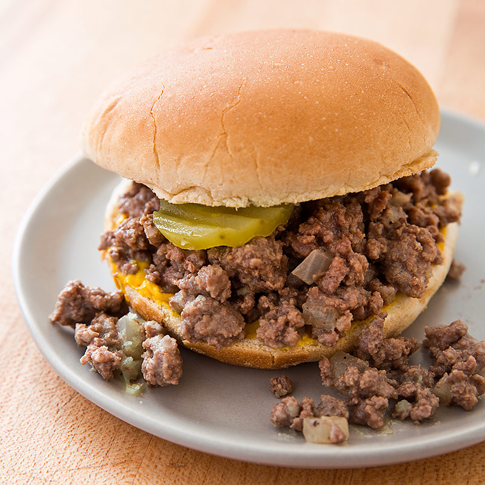

The Loose Meat Sandwich

Description
True to its name, the loose meat sandwich is basically an unformed
hamburger. It’s served on a bun with mustard and pickles, but the
difference lies in the preparation of the beef. Instead of a standard patty,
ground beef is crumbled and steamed with nothing but salt added. Much
of the fat drains off and you are left with a lean pile of pebbled beef.
Once married to a bun that has been doped with condiments, it becomes
a sort of Sloppy Joe without the slop. It is a very straightforward
sandwich—one where the flavor of beef shines.
Ingredients
- 500g fresh-ground meat
- 240ml beer
- yellow mustard
- salt
- soft white buns
- dill pickle chips
Steps
- Preheat the seasoned cast-iron skillet over medium heat. Add the beef
and, using the wooden spoon, crumble the beef as it cooks, as if you were
preparing ground beef for tacos.
- Once the meat is pebbly, kick the heat up to medium-high and cook for
about 4½ minutes, until lightly browned.
- Pour in the beer and continue to stir and crumble the meat frequently
as the beer cooks off, another 9 to 10 minutes.
- While the meat is steaming, prepare the hamburger buns with a
slather of mustard and 2 or 3 pickle chips on the bottom half of each bun.
Set aside.
- Just before all the beer has evaporated from the skillet, mix in the
mustard and salt to taste. Continue to cook until all of the liquid has
evaporated. Remove from the heat.
- Use the perforated spoon to scoop up a pile of meat, draining off any
remaining fat, and press onto a prepared bun. Repeat with the remaining
meat and buns.
- Enjoy with the remaining beer, and maybe one or two more.